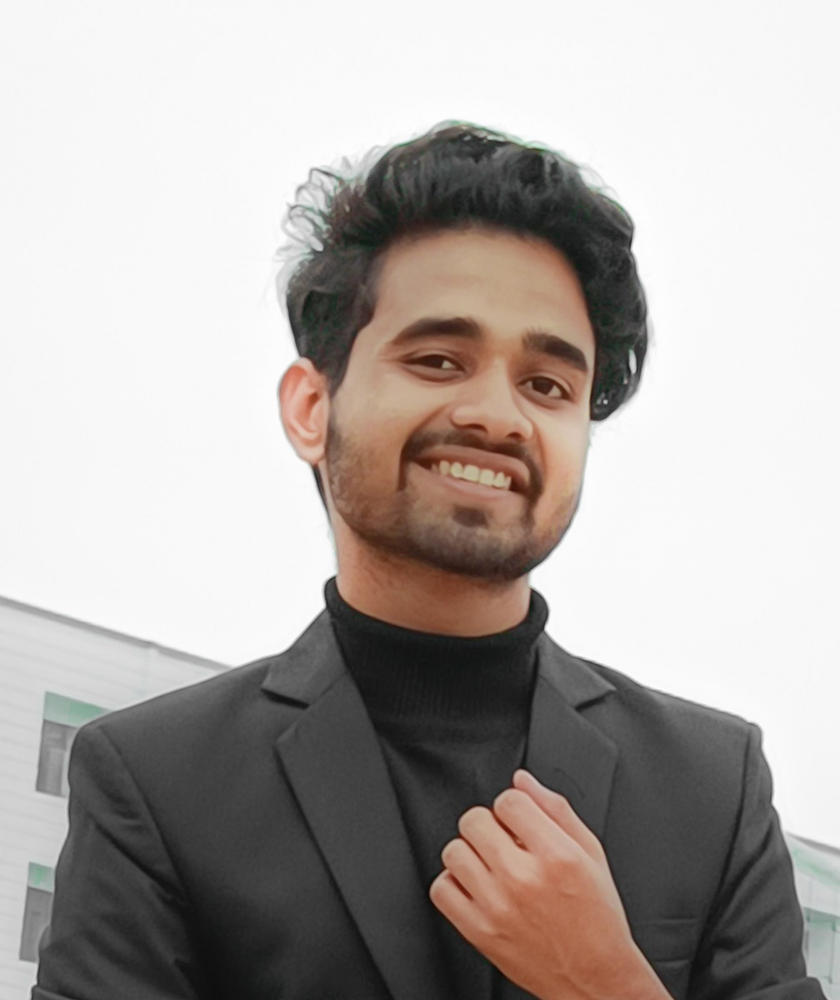

RESUME

GAURAV TIWARI
Mobile No.:-6392006333
Email Id:- gaurav.tiwari6392@gmail.com
LinkdIn Id:- Gaurav Tiwari@Linkdin.in
Address:- 212kh Fattepur,Maudaha(Hamirpur),U.P.
Career objective:
To obtain a challenging position in the field of computer applicationn where i can utilize my technical knowledge and skills to contribute to the growth of the organization.
Acadmics:
| Year |
Univercity/Board |
Degree |
Grades |
| 2023-25 |
CSJMU |
BCA |
Persuing |
| 2022 |
UP Board |
12th |
72% |
| 2020 |
UP Board |
10th |
81% |
Skills:
| Technical Skills |
Soft skills |
| Web development |
Communication Skills |
| Programming Languages:C,C++,JAVA,HTML,CSS |
Problem Solving and Decision-Making ability |
| Artificial Inteligence |
Ability to manage time |
Internship:
- July 2022 to June 2021- Completed an internship for one year on Photo costomized gifts and accessories and Handling Social Media Platforms from Printstar.
Workshops/Confrences/Seminars:
- Attended a workshop on the New courses offered by IBM in various domains conbucted by Mr.Aman Bakshi from Indraprastha inspitute of information technoiogy,New Delhi, organized at Axis Colleges.
Certification:
- How to stand Out
-
Learning C
-
Cloud Computing
- Assessing And Improving Strategic Plans
- Body Language Essential for Working Professionally
- Born On Instagram Creator Course
personal Details:
| Father's Name | Ramesh Kumar |
| D.O.B. |
11/12/2006 |
|
Nationality
|
Indian |
| Languages know |
English, Hindi |
Sign.
Date:
Place:
|